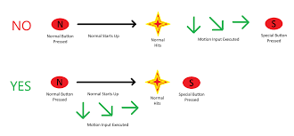

Que lo hace tan dificil?
El juego fue hecho en la epoca que nintendo intentaba hacer los juegos más complejos intentando diferentes mecanicas ya sea sobreextendiendo los botones necesarios o intentando dificultades en el propio juego, los desarrolladores en este juego terminaron haciendo que una mecanica importante en este tipo de juego de pelea fuera revocada
no hay buffer
buffer es una mecanica de varios juegos que guarda tu ultima acción dentro de un periodo de tiempo, permitiendo que acciones complejas no tengan que hacerse de manera perfecta y dando espacio a ir haciendo movimientos en tiempos muertos de animación,lo que hace que el juego se sienta "tosco"
Como ser más rapido en el juego
para poder mejorar en este juego es necesario saber dos cosas, como moverse y que hacer despues del un golpe,por ahora nos enfocaremos en como moversemovilidad vertical
Una de las cosas que hace diferente al juego de los otros es la principal razon por la que se cree que es más rapido,la velocidad que lleves al momento de saltar no se limite al estar en el aire, permitiendo mantener la velocidad original del movimientoL-Cancel
Mecanica que permite a los personajes mejorar su tiempo de actuación al lanzar aereos, la mecanica se basa en que a la mitad del movimiento se permite presionar el boton de escudo al tocar el suelo para activar la mecanica, interrumpiendo el ataque actual y permitiendo moverse más rapido que cuando no lo hace
Wavedashing
Tecnica creada por las propias mecanicas del juego, en este existe gracias a una de las mecanica más comunes en este tipo de juegoEl airdoge es un tipo de esquive que permite ser invencible por un tiempo en el aire, esta mecanica en este juego puede ser direccionada al propio suelo para que la velocidad del propio airdoge sea transmitido como velocidad horizontal.
Esta tecnica es mejor o peor dependiendo del personaje y del tipo de plataforma